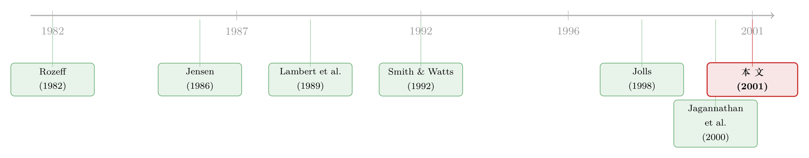

老板手里那把期权，正在悄悄把股利换成回购
本文读的是 Fenn & Liang (2001, Journal of Financial Economics)：用 1993–97 年 1,100 多家美国非金融公司的数据，他们发现管理层股票期权与股利之间存在强烈的负相关，与回购之间存在正相关——期权持有量提高一个标准差，股利收益率就下降约 38 个基点。换句话说，高管手里那把不受股利保护的看涨期权，可能正是「股利让位于回购」这场大迁移背后的一只看不见的手。
1 一桩悬案：股利去哪儿了
先讲一个在 1990 年代末让公司金融学界坐立不安的事实。
长期以来，美国公司把现金还给股东的主要方式是现金股利（cash dividends）。可到了 1990 年代，画风变了：公开市场股票回购（open market share repurchases）像潮水一样涨起来，而股利在总分配里的份额却在萎缩。Fenn 和 Liang 的样本就把这个转折点钉在了纸面上——在他们 1993–97 年的样本里，总分配（total payout）平均只占股票市值的 2.5%，其中股利 1.3%、回购 1.2%，回购占总分配的比重已经高达 47.8%。一半对一半。要知道，仅仅十几年前，回购还是个边角料。
于是一个自然的问题是：为什么？ 是税收？是信号？是灵活性？这些解释当年都有人讲。但 Fenn 和 Liang 想问的是一个更「公司治理」的问题——会不会，是公司高管自己的口袋，悄悄改写了公司把钱还给谁、怎么还？
这就要从同一时期另一件大事说起：高管薪酬的「股权化」。Hall 和 Liebman（1997）记录了一个惊人的趋势——自 1980 年以来，以股票和股票期权为基础的高管薪酬急剧膨胀。公司越来越愿意给经理人「发股票、发期权」，让他们的身家与股价绑在一起。
把这两条曲线放在一起看——回购在涨，期权也在涨——你很难不怀疑：这两件事，是不是同一个故事的两面？
这正是本文的「钩子」：分配政策的世纪变迁，未必只是市场偏好的漂移，它可能直接写在高管的工资条里。关于自由现金流这条更古老的主线，可参见《现金为什么一定要「还」出去？——四十年后，重读 Jensen 的自由现金流》。
2 两条逻辑链：一条管「多少」，一条管「怎么分」
要把这个怀疑做成一篇严谨的论文，作者首先把「管理层股权激励如何影响分配」拆成了两条互不相同的逻辑链。这是全文最该想清楚的地方。
第一条链，关于分配的「水平」（level）。 这是 Jensen（1986）那套自由现金流逻辑的直接延伸。经理人手里如果攥着大把闲钱，又没有好项目，他就有动机去搞那些「毁灭价值」的投资，而不是把钱还给股东。那么，让经理人持有更多本公司股票（management shares），会不会因为「利益对齐」而促使他多分一点？这条思路和 Mehran（1992）、尤其是 Berger 等人（1997，即 Berger, Ofek, Yermack）讲杠杆的逻辑同源——激励性薪酬通过缓和代理冲突，能让公司更「该借就借、该还就还」。
第二条链，关于分配的「构成」（composition）。 这才是本文真正的杀手锏，也是它区别于前人的地方。它的源头是 Lambert、Lanen 和 Larcker（1989）的一个洞见：高管的股票期权和所有看涨期权一样，其价值与未来的股利支付负相关。
为什么？这是期权定价里最朴素的一条直觉——公司每派出一块钱股利，股价就要除权下跌一块钱（近似），而期权的价值钉在股价上，股价掉了，期权就跟着缩水。更要命的是，绝大多数高管期权不做股利保护（not dividend-protected）：公司发股利，期权的执行价并不会向下调整去补偿持有人。于是，一个手握大把期权的 CEO，会本能地讨厌派股利。
那他会怎么把现金还出去呢？回购。 回购不分股利，股价不除权，他手里的期权毫发无伤。所以 Lambert 等人预测：期权越多，股利越少。Fenn 和 Liang 把它往前推了一步——被压下去的股利，很可能以回购的形式重新冒出来。
注意这里有一个微妙的「中性」预言：单看总量，经理人其实无所谓是把减下来的股利留在公司、还是拿去回购——两种情形下他期权的价值是一样的。所以期权对总分配的影响方向是不确定的；它真正咬住的，是分配的构成。这一点决定了本文的实证重心。
3 识别策略：把「自由现金流」摁住，再看激励
讲清了机制，接下来是怎么把它从数据里「逼」出来。
本文的实证设计可以一句话概括：在控制住自由现金流（free cash flow）的各种代理后，去看分配与高管股权激励之间的偏相关。这不是双重差分，也不是工具变量——它本质上是一组精心设定的横截面回归（cross-sectional regression），但有几处设计值得说道。
第一，单位是「公司层面的长期平均」，而非「公司–年」。 这是本文一个刻意的选择。已有大量文献研究的是短期行为——某一年要不要回购、要不要提股利。而 Fenn 和 Liang 关心的是长期分配政策：他们把每家公司 3–5 年的年度观测取平均，最终回归样本就是 1,108 个公司层面的观测。这样做的好处，是把那些影响「时点决策」却难以控制的噪音洗掉了——比如公司觉得股价被低估了就趁机回购、或者为了给市场发信号而提股利。作者要的是政策的「重心」，不是政策的「抖动」。
第二，自由现金流用一组代理变量摁住。 核心代理是净经营现金流（net operating cash flow）——EBITDA 减去资本支出，再除以资产；样本均值约为资产的 7.4%。作者坦言也试过单用 EBITDA 或扣息后的现金流，结论类似，但含净经营现金流的设定一贯表现更好。投资机会则用经典的市值账面比（market-to-book）来代理（样本均值 1.748），它同时出现在 Smith & Watts（1992）的框架里。
第三，关键解释变量是「比例」而非「金额」。 高管股权激励用两个变量度量：高管持股占总股本的比例（management shares / shares outstanding），以及高管期权对应的标的股数占总股本的比例（management options / shares outstanding）。数据来自 S&P 的 Execucomp 库——它从公司代理声明（proxy statement）里抓取 S&P 1500 全部高管（不只是 CEO）的持股与期权。作者特意强调用「全体高管」而非只用 CEO，因为公司财务政策反映的是整个高管团队的利益。
这里埋着一个有意思的描述性事实：高管直接持股平均 5.9%、中位数 1.6%；期权标的股平均 2.3%、中位数也是 1.6%。均值上持股是期权的两倍多，中位数却几乎一样——说明持股的分布被少数「大股东型」高管严重右偏拉高了。作者后面会专门检验，剔除这些高持股公司（借用 Morck, Shleifer, Vishny, 1988 的「壕沟效应/entrenchment」担忧）结论是否稳健。
4 三个发现：水平、构成、与那把看不见的手
把回归跑出来，结果分三层，层层递进。
发现一（水平）：股权激励只在「最该治」的公司里管用。 高管持股与更高的分配相关，但仅限于代理问题最严重的那批公司——持股本来就低、投资机会少、自由现金流高。而在持股已经较高、投资机会多、闲钱少的公司里，持股和分配之间没有关系。作者由此下了个克制的结论：股权激励或许能在「现金最泛滥」的公司缓解代理成本，但对其余公司，边际上不起作用。与此同时，回购和股利都与净经营现金流、公司规模正相关，与市值账面比、杠杆负相关——完全符合代理成本视角下的分配理论。
发现二（构成）：期权强烈地把分配从股利推向回购。 这是全文的高潮。在控制住自由现金流之后，股利与高管期权之间存在强烈的负相关，正如 Lambert 等人（1989）所预言。量级上——高管期权变量提高一个标准差，股利收益率下降约 38 个基点，这在经济意义上相当可观（别忘了样本里股利收益率均值才 1.3%）。同时，回购与期权之间存在统计上显著的正相关。一减一增，两头对上：期权可能正是「回购侵蚀股利」的推手。这个结果在各种子样本里都稳健。
光看简单相关也能嗅到味道：全样本里，股利与高管期权的相关系数是 -0.35（p<0.01）；在高管持股低于 5% 的子样本里更强，达到 -0.40。而回购与期权的相关在全样本里只有 0.05 且不显著——也就是说，期权对回购的正向拉动，要在摁住自由现金流之后才干净地显现出来。这恰恰说明了为什么要做偏相关，而不是停在简单相关上。
发现三（构成的另一半）：除了期权，「灵活性」也在塑造构成。 回购占总分配的份额，与市值账面比、与经营收入的波动率（volatility of operating income）正相关。直觉是：投资机会多、现金流难预测的公司，需要更多的财务灵活性（financial flexibility），于是更愿意靠「随时可停」的机会型回购，而不是靠「一旦许诺就难削减」的股利来还钱。
不过作者很诚实地指出，这第三个发现也反过来威胁了自己的解释：如果期权本身就是投资机会的代理，那么「期权—回购」的关系也许来自灵活性需求，而非期权的激励效应。这是全文最关键的一处自我盘问，作者专门在文中处理（对应原文 Section 3.4）。他们的回应是：证据的天平仍然倾向「期权有直接的激励效应」这一解释——比如期权对股利的负向作用，很难单靠「投资机会」来解释，因为那条逻辑链里期权减股利是有独立机制的（期权不受股利保护）。
这恰恰提醒我们：本文的识别是「控制变量式」的，不是准实验。「期权」与「投资机会/灵活性」在数据里高度纠缠，作者靠的是机制上的可分性和稳健性检验，而非一个外生冲击。后文我会把这当成主要的识别担忧来谈。
5 文献脉络：从「股利是缰绳」到「期权是推手」
把这篇论文放回它生长的那条藤蔓上，故事会更清楚。
最早，分配被当成一种治理工具。Rozeff（1982）就认为股利是一种「绑定机制（bonding mechanism）」，逼着经理人把内部资金吐出来、少做亏本投资——他甚至发现股利与内部人持股负相关，理由是持股本身已经对齐了利益，于是股利这味「替代药」就不必下得太重。接着，Jensen（1986）把这套逻辑提炼成了自由现金流假说，成为此后所有「代理成本视角看分配」的总源头。
然后，研究开始把目光投向「投资机会」。Smith 和 Watts（1992）用行业、五年增量的数据发现：成长机会越少的行业，股利收益率越高——分配确实在替股东「看住」代理成本。Gaver 和 Gaver（1993）在公司层面用一年数据复现了类似结论。Bagwell & Shoven（1988）和 Dittmar（1997）则把这套思路搬到回购上。

但这一脉络有个共同的盲点：它们隐含假设了股东与经理人利益已经对齐，并不直接去问「到底是什么动机驱使公司吐出现金」。而真正把「高管激励」这个变量请进门的，是 Lambert、Lanen、Larcker（1989）——他们指出期权不受股利保护，预测期权会压低股利，并发现采用高管期权计划后股利确实低于预期水平。White（1996）从另一个侧面佐证：用「把高管奖金和股利挂钩」的合约去鼓励派息，这种安排在高管持股低的公司里更常见——反过来暗示持股本身就在鼓励派息。
到了 1990 年代末，Jolls（1998）、Bartov 等（1998）、Weisbenner（1998）用离散选择模型发现回购概率与期权正相关；Jagannathan、Stephens、Weisbach（2000）则刻画了「灵活性」如何决定股利与回购的取舍。Fenn 和 Liang 站在这群人的肩上，但做了别人没做的事：他们同时用上了「数量」信息（不只是「回购/不回购」的 0-1 选择），因此能一并回答水平与构成两个问题，并把持股与期权分开来看。这就是本文在这条脉络里的位置——它把「分配是治理工具」和「期权改写分配」两股线，第一次拧成了一根。
这条脉络的下游，是后来关于「股利集中化」「回购择时」的大量研究。可顺带参见《股利没有消失，它只是「搬」进了二十几家巨头的口袋》与《买回自己的股票，他们到底怎么「下手」？》。
6 评论与延伸（Q&A + 研究方向）
(a) 几个可能的疑问
Q：为什么不用 CEO 一个人的持股，而要用「全体高管」？这会不会稀释了激励信号？
作者的理由是公司财务政策反映的是整个高管团队的利益，而非 CEO 一人。Execucomp 恰好提供全体高管的数据，这与只用 CEO 的 Berger 等（1997）、Mehran 等（1998）不同。代价是：若 CEO 的激励才是真正起作用的那个，用团队均值可能引入测量误差、偏向于低估系数。但从「财务政策是集体决策」的角度，这反而更贴近现实。
Q：高管持股的分布严重右偏，少数人持股超过 20%，这会不会把结果带偏？
这正是作者警惕的地方。Morck, Shleifer, Vishny（1988）指出持股高到一定程度，「壕沟效应」会盖过「利益对齐」。作者因此专门检验剔除/纳入高持股公司后的稳健性，并发现持股相关的结论对高持股公司的纳入比较敏感（子样本里更强）；而期权相关的结论则在各子样本里都稳健。所以本文真正硬的结论，是期权那一条。
Q：38 个基点听起来不大，凭什么说「经济上显著」？
关键是参照系。样本里股利收益率的均值才
1.3%，38 个基点意味着接近三成的相对变动，且这是仅由「期权提高一个标准差」带来的。对一个本就在缓慢萎缩的股利总量来说，这个边际推力足以解释趋势的一部分。
Q：会不会是「成长型公司既爱发期权、又爱回购」，期权只是投资机会的代理？
这是最致命的替代解释，作者也最当回事。如果成立，「期权—回购」的正相关就来自灵活性需求而非激励。但作者强调：期权对股利的负向作用有独立机制（期权不受股利保护），很难用投资机会解释掉；而且控制了市值账面比、波动率等灵活性代理之后，期权效应依然在。证据的天平倾向「直接激励效应」，但这并非铁证。
Q：本文和「自由现金流假说」是什么关系，是验证还是补充？
既验证又补充。验证的是：分配确实与代理代理变量（现金流、规模、市值账面比、杠杆）按理论预期的方向相关；补充的是：它指出高管激励这个被前人忽略的渠道，既能在最严重的公司缓解代理（水平），又能扭曲分配的形式（构成）。
Q：期权不做股利保护，是制度疏忽还是有意为之？如果做了保护，结论会怎样？
作者在文中专门讨论了「为什么期权不做股利保护」。这本身是个耐人寻味的制度事实——若期权做了股利保护，高管减股利的动机就会消失，本文的「期权—股利」负相关也就不该存在。正因为现实中绝大多数高管期权不保护股利，这条机制才有了用武之地。
(b) 几个可能的研究问题与提案
-
【把横截面升级为准实验】用「期权费用化」（FAS 123R, 2005）做冲击。 【经济故事】本文最大的软肋是识别——期权与投资机会纠缠。2005 年起强制费用化大幅改变了公司发期权的成本，不同公司受冲击程度不同（取决于既有期权强度）。这提供了一个相对外生的「期权下降」冲击。 【可行性】高。Execucomp 持续可得，事件时点清晰，可做 DiD。难点是费用化与同期回购大潮、税改交织，需要细致的处理组定义。
-
【迁移到公司债/信用市场】期权激励如何改写「对债权人的分配」？ 【经济故事】回购同样是把现金从公司搬给股东，对债权人而言它和股利一样是「资产流出」。若期权驱动 CEO 偏好回购，债权人会不会在契约（covenant）或利差上「定价」这种激励？ 【可行性】中。需要把 Execucomp 的高管期权数据与 FISD/TRACE 的债券契约、二级市场利差合并。识别仍受投资机会干扰，但债券契约的横截面差异提供了新的检验角度。可参见《老板不想借钱，债却替他保住了位子》的思路。
-
【外资持有人视角】当大股东是外国机构时，期权对分配的扭曲会被「管住」吗？ 【经济故事】外资机构投资者往往有不同的治理偏好与税收处境（对股利 vs 回购的偏好不同）。若外资持股越高，「期权压股利」的效应越弱，就说明外部治理能纠正内部激励的扭曲。 【可行性】中。需要 13F/FactSet 的机构持股按国别拆分，与 Execucomp 合并。识别可借「指数纳入」等外资可投资度的外生变动。
-
【期权的「非线性」激励】行权价是否「在水下」会改变分配偏好吗？ 【经济故事】本文用期权标的股数占比作为度量，但期权的 delta/vega 取决于它是否「在价内」。深度价外的期权对股利的敏感度其实较低。把期权拆成「价内/价外」「delta/vega」，可以更锐利地检验机制。 【可行性】高。可用 Core-Guay 方法从代理声明重构期权组合的 delta 与 vega，与本文结论对接，是一个干净的「机制加权」练习。
-
【长期 vs 短期的张力】本文刻意做长期平均，但激励是会变的——期权授予的「时点」能否预测分配的「拐点」？ 【经济故事】本文洗掉了时序抖动，但激励本身随授予节奏波动。一个自然的问题是：大笔期权授予之后的几年里，公司是否系统性地从股利切换到回购？这把横截面结论搬回事件时间轴。 【可行性】高。Execucomp 有逐年授予数据，可做公司固定效应的面板事件研究，识别比纯横截面更强。
7 我的判断
先说贡献。这篇论文的聪明之处，在于它把一个含混的大趋势（股利让位于回购）翻译成了一个可检验、有机制、有量级的微观命题，并且第一个同时用上「数量」信息去回答「水平」与「构成」两个问题。它对 Lambert 等（1989）那条「期权不受股利保护→压低股利」的逻辑给出了迄今最干净的横截面证据，38 个基点的量级也足够让人认真对待——在那个回购刚刚追平股利的年代，这等于给「制度激励改写公司行为」提供了一份扎实的脚注。它的克制也值得称道：在持股那条线上，作者没有夸大，老老实实承认只有「最该治」的公司才管用。
再说担忧。最大的问题是识别。这是一篇 2001 年的横截面回归论文，它的全部说服力建立在「控制变量摁得够不够干净」之上。而期权恰恰与投资机会、与灵活性需求高度共线——作者自己也坦承（Section 3.4），并只能靠机制的可分性来辩护，而非一个外生冲击。今天的读者会立刻想问：有没有一个准实验能把「期权」单独摇出来？其次，因果方向也未必干净——是期权改变了分配，还是「打算多回购的公司」更愿意发期权？本文的长期平均设计缓解了部分时序内生性，却换不来真正的外生性。
我最想看到的后续，是把上面提案 1 那个 2005 年费用化冲击做扎实：一个让「期权强度」相对外生地下降的自然实验，正好能检验本文的核心机制是否经得起准实验的审问。如果费用化之后，原本期权密集的公司系统性地把回购换回了股利，那这篇 2001 年的横截面论文，就会从「一个可信的相关」升格为「一条可信的因果」。
参考文献
- Bagwell, L.S., Shoven, J.B. (1988). Share repurchases and acquisitions: an analysis of which firms participate. In: Corporate Takeovers: Causes and Consequences, University of Chicago Press.
- Berger, P.G., Ofek, E., Yermack, D.L. (1997). Managerial entrenchment and capital structure decisions. Journal of Finance 52, 1411–1438.
- DeAngelo, H., DeAngelo, L., Skinner, D. (2000). Special dividends and the evolution of dividend signaling. Journal of Financial Economics 57, 309–354.
- Dittmar, A. (1997). Stock repurchase waves and the large firm effect. Working paper, University of North Carolina.
- Gaver, J.J., Gaver, K.M. (1993). Additional evidence on the association between the investment opportunity set and corporate financing, dividend, and compensation policies. Journal of Accounting and Economics 16, 125–160.
- Hall, B.J., Liebman, J.B. (1997). Are CEOs really paid like bureaucrats? NBER Working Paper 6213.
- Jagannathan, M., Stephens, C.P., Weisbach, M.S. (2000). Financial flexibility and the choice between dividends and stock repurchases. Journal of Financial Economics 57, 355–384.
- Jensen, M. (1986). Agency costs of free cash flow, corporate finance, and takeovers. American Economic Review 76, 323–329.
- Jolls, C. (1998). The role of incentive compensation in explaining the stock-repurchase puzzle. Mimeo, Harvard Law School.
- Lambert, R.A., Lanen, W.N., Larcker, D.F. (1989). Executive stock option plans and corporate dividend policy. Journal of Financial and Quantitative Analysis 24, 409–425.
- Mehran, H. (1992). Executive incentive plans, corporate control, and capital structure. Journal of Financial and Quantitative Analysis 27, 539–560.
- Morck, R., Shleifer, A., Vishny, R.W. (1988). Management ownership and market valuation. Journal of Financial Economics 20, 293–315.
- Rozeff, M.S. (1982). Growth, beta, and agency costs as determinants of dividend payout ratios. Journal of Financial Research 5, 249–259.
- Smith Jr., C.W., Watts, R.L. (1992). The investment opportunity set and corporate financing, dividend, and compensation policies. Journal of Financial Economics 32, 263–292.
- Stephens, C., Weisbach, M. (1998). Actual share reacquisitions in open-market repurchase programs. Journal of Finance 53, 313–334.
- White, L.F. (1996). Executive compensation and dividend policy. Journal of Corporate Finance 2, 335–358.